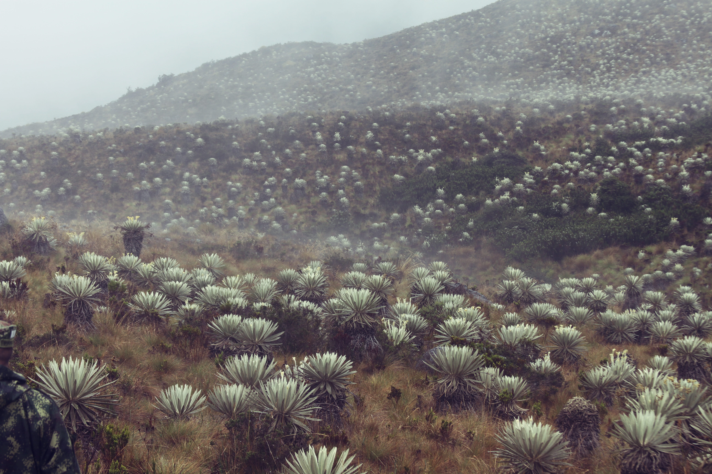
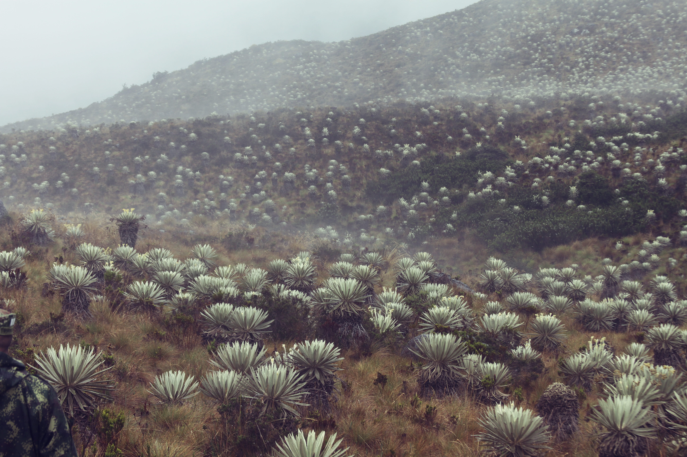
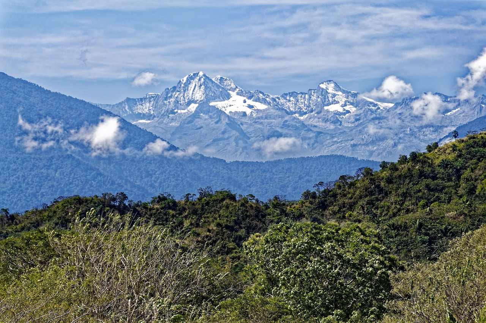
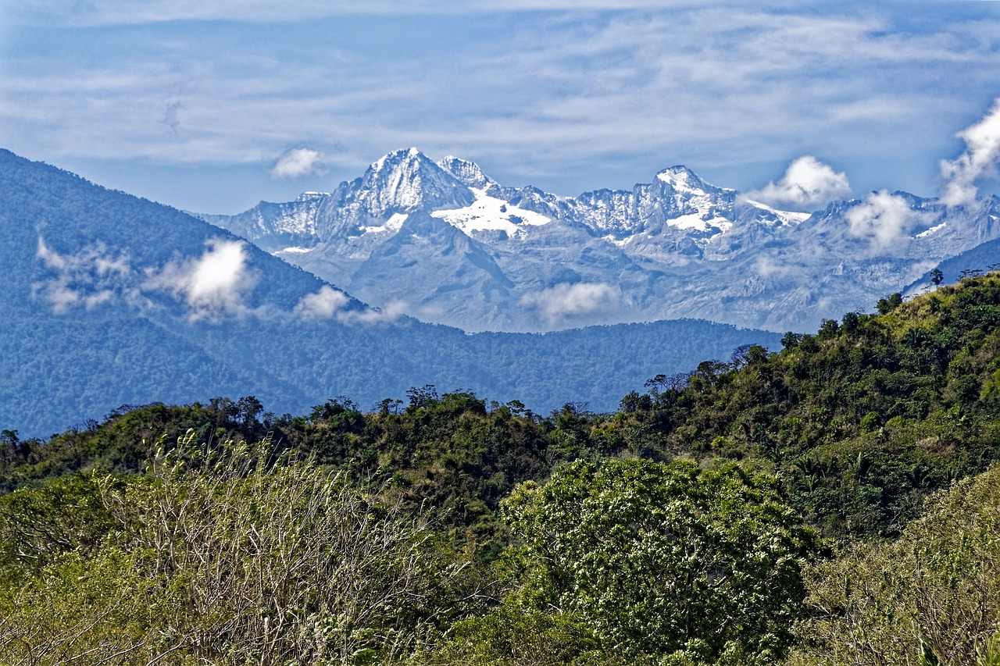

El departamento de Boyacá presenta una variada y diversa flora, lo cual desemboca en una alta variedad de ecosistemas con zonas de páramo bosque húmedo tropical, piedemonte llanero y bosque andino y altoandino; en los cuales se presume haya una alta diversidad de especies. Es así como la construcción de la línea base para el departamento de Boyacá tuvo como objeto identificar y analizar el estado de conocimiento existente de la Biodiversidad en algunos grupos biológicos, encaminada a llenar vacíos de información a través de las expediciones Boyacá Bio. La lista presentada contiene 6713 registros de especies, pertenecientes a 26 clases, de las cuales corresponden a plantas vasculares: Cycadopsida (1), Equisetopsida (2), Liliopsida (868), Lycopodiopsida (59), Magnoliopsida (3131), Marattiopsida (2), Pinopsida (7), Polypodiopsida (343), Psilotopsida (2). Plantas no vasculares: Andreaeopsida (2), Bryopsida (353), Jungermanniopsida (180), Marchantiopsida (7), Polytrichopsida (12), Sphagnopsida (14). Invertebrados: Insecta (60). Vertebrados: Mammalia (105), Actinopterygii (114), Reptilia (111), Amphibia (91), Aves (1163). Hongos: Agaricomycetes (46), Dothideomycetes (1), Geoglossomycetes (2), Leotiomycetes (17), Sordariomycetes (20). El recurso fue construido a partir de la verificación de registros biológicos (peces, anfibios, reptiles, aves, mamíferos, insectos, plantas vasculares, plantas no vasculares y hongos) provenientes de tres fuentes: insumo SiB Colombia y GBIF para la consolidación de la línea base del departamento de Boyacá elaborado por EC-SiB (SIB 2018), de la revisión e identificación de ejemplares de la colección de peces e insectos de la Universidad Pedagógica y Tecnológica de Colombia UPTC, y de la revisión de información secundaria (literatura-documentación). Esta recopilación taxonómica, se desarrolló bajo el convenio No 17-17-170-195CE, suscrito entre UPTC-IAvH, con el objeto fundamental de aunar esfuerzos entre las partes para generar la línea base de información de biodiversidad para el departamento de Boyacá, así como desarrollar procesos de investigación con miras a complementar vacíos de información y contribuir a la consolidación de redes de investigación del departamento de Boyacá en el marco del Convenio.


Cundinamarca es un departamento privilegiado en términos de biodiversidad. Alberga diversos paisajes que van desde relieves bajos y planos hasta montañosos, por donde revolotean más de 900 especies de aves. También es un territorio de agua, representado en páramos como Sumapaz (el más grande del mundo), Chingaza, Rabanal y Guerrero, y los cauces de ríos como Magdalena, Bogotá, Negro y Apulo. Al contar con todos los pisos térmicos, su repertorio de flora y fauna es amplio y diverso. Frailejones, bromelias, quiches y cóndores en sus complejos de páramo; tinguas y alcaravanes en los humedales de la sabana; osos de anteojos, dantas y venados en sus tupidas montañas de niebla; tortugas charapas y babillas en las arenas blancas del río Magdalena; y 87 tipos de orquídeas y 83 de colibríes, son algunas de las joyas naturales que hacen presencia en las más de 2,4 millones de hectáreas cundinamarquesas.
 

.jpg) 
